Code
import warnings
warnings.filterwarnings('ignore')
import numpy as np
import pandas as pd
import matplotlib
import matplotlib.pyplot as plt
from sklearn.preprocessing import StandardScaler
plt.rcParams["figure.figsize"] = (20,10)A wind turbine is a complex electromechanical system that consists of several components and sub-systems. The major components include rotor, bearings, mechanical shaft, gearbox, generator, power electronic interface and sensors as shown in Figure.
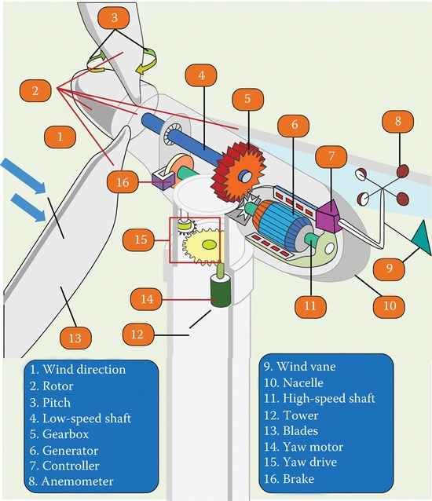
Wind turbine system is subject to several types of faults within various components as shown in Figure..
The rotor of the wind turbine consists of blades and hub. The wind turbine rotor is subject to various mechanical faults such as rotor asymmetry, fatigue, crack, increased surface roughness, reducedr
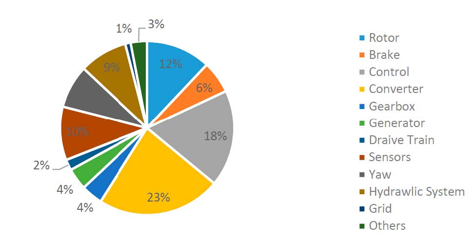
stiffness, and deformation of blades. Incorrect design of blades pitch angle and blades mass imbalance are the main causes of rotor asymmetry. Fatigue is caused by material aging and variable speed of wind on the blades. Long-term fatigue causes a reduction of the stiffness of the blades and leads to crack on the surface. Blade surface roughness is usually caused by icing, pollution, exfoliation and blowholes. As rotor faults are accompanied with a change in the blade material structure, these faults can be diagnosed using acoustic emission and vibration sensors. Acoustic emission is able to detect emerging structural changes by inserting sensors on the blades. If these faults develop to a certain level that contributes abnormal vibrations of the blades, then signals information acquired from vibration sensors can be utilized for fault diagnosis.
Failure in the gearbox and bearing depends on various factors such as material defects, design, man- ufacturing and installing errors, surface wear, torque overloads, misalignment and fatigue. The most common gear box failures include tooth abrasion, tooth crack, breakage, fracturing and surface fatigue initiated by the debris due to bearing failures. These faults may cause an abnormal temperature increase of the bearing and the lubrication oil which can be used as an indication for such types of faults.
The failures of the mechanical shaft include corrosion, misalignment, crack and coupling failure. These faults affect the normal rotation of the shaft as well as other subsystems connected to the shaft. Hence the torque transmitted via the drivetrain will be affected and may lead to vibrations at certain characteristic frequencies in the gearbox, rotor, and generator. Shaft misalignment fault affects the amplitude of the fundamental frequency of the vibration of the gearbox, rotor, and generator. Hence, shaft faults can be detected and analyzed by capturing vibration, torque, and electrical signals. The analysis is done with the methods of frequency analysis such as fast Fourier transform (FFT).
A hydraulic system delivers hydraulic power to drive the motors that is used to adjust the blade pitch angle, maximizes wind power generation by adjusting yaw position and controls the mechanical brake to ensure the safety of wind turbine. This system is subject to oil leak and sliding valve blocking faults. Pressure and level sensors’ signals are used to diagnose these faults.
A mechanical brake typically has three main components such as disk and calipers, hydraulic mech- anism and three-phase ac motor. Hydraulic mechanism is used to drive the calipers and motor is used to power the hydraulic mechanism. The brake is usually mounted on the main shaft. It is used to prevent the over speed of the rotor and even force the shaft to stop in case of failures of critical components. The brake is also applied for yaw subsystem to stabilize the bearing. The disk may be cracked due to overshoot of mechanical stress on the brake and overheating. Faults of the mechanical brake can be diagnosed through temperature and vibration monitoring.
The wind turbine tower faults are mainly occurred due to structure damages such as cracks and corrosions. These faults may be caused due to several factors including improper installation, loading, poor quality control during the manufacturing process, lightning, fire and earthquakes. Time and frequency domain analysis techniques can reveal the health condition of the tower.
There are two types of faults that may take place in the electrical machine: mechanical and electrical faults. The electrical faults comprise open circuit, stator/rotor insulation damage and electrical im- balance. On the other side, broken rotor bar, air gap eccentricity, bent shaft, bearing failure and rotor mass imbalance are the main mechanical faults. The most common fault reported in the literature is the short circuit turns of coils in the wind turbine generator. These faults can be detected through shaft displacement detection, torque measurement, and vibration analysis. Temperature sensor can be used to detect winding faults. Stator open-circuit faults alter the spectra of the stator line currents and instantaneous power. Since rotor electrical imbalance causes shaft vibration, vibration signals can be used to monitor electrical imbalance. Stator electrical imbalance can be detected from the change in the harmonic content of electrical signals.
Vibration analysis is one of the powerful tools that is currently used to monitor the mechanical integrity of wind turbines. Vibration sensors installed on the casing of the wind turbine are used to detect faults within various wind turbine components such as gearbox, bearing, rotor and blade, tower, generator and main shaft. There are three main types of vibration sensors: displacement sensors, velocity sensors and accelerometers. The signals acquired from accelerometer carry out the accelerated fault information and the amplitude of the accelerated signal demonstrates the fault severity level. Installation of vibration sensors and required data acquisition devices increase the wiring complexity and capital cost of the technique. In addition, it is quite diffcult to insert the sensors on the surface or into the body of the components. Moreover, if the sensors and data acquisition devices fail to provide signals, it may lead to the failure of wind turbine control, mechanical and electrical subsystems. Vibration signals are not capable of detecting incipient faults due to low signal to noise ratio (SNR).
Acoustic emission sensors mounted on critical areas emit sound signals which are used to detect the structural defects of blades, gearbox, and bearings. The signal acquired from small structural changes indicates an incipient structure damage or defect such as fatigue, crack, reduced stiffness and increased surface roughness. Unlike vibration analysis, this technique is able to detect incipient faults at early stages. However, it requires a large number of sensors which increases the cost and complexity of the technique.
Temperature data are mainly used to detect faults within generators, bearings, gearbox and power converters. A cost e ective wind turbine thermal model is developed to diagnose the faults through temperature analysis based on the Supervisory control and data acquisition (SCADA) signal. The SCADA signal provides reach information regarding faults of the wind turbine system with suitable signal processing methods. An electro-thermal model of DFIG is presented that reduce the cost of fault prevention and diagnosis for the wind turbine system. SCADA data control sets are used to prevent and diagnose wind turbine faults by analyzing of the machine’s temperature. A generalized model is presented based on SCADA data analysis of ambient temperature and wind speed to predict the faults for wind turbine. Although the technique is considered reliable and cost e ective, its implementation is a bit complex. This technique cannot identify incipient faults and it is hard to identify the root cause and source of the temperature variation. Temperature detected by thermal sensors may rise due to nearby faulty components. Hence, the technique is unable to detect accurate fault locations. In addition, the thermal sensors are quite fragile in harsh environments.
Electrical signal-based methods are widely used to detect various faults due to their distinctive advan- tages. For example, the magnitudes of certain harmonic components in electrical current signal can be used to detect faults at early stages. Stator and rotor currents and stator voltages are measured to monitor the health condition of the generator. A stator and rotor current based data technique is proposed to identify faults within the doubly fed induction generator (DFIG). Power signals calculated from voltage and current signals is used to detect rotor electrical imbalance. Stator open circuit faults of DFIGs is detected using power and current spectra. A mechanical fault or structural defect usually induces vibration of the component that can modulate generator electrical signals. This modulated signal involves fault related information of the mechanical components. The P-amplitude of gener- ator electrical signal indicates the rotor imbalance due to the increased blade surface roughness or yaw misalignment. Electrical power spectral density indicates the reduction of blade sti ness. The feature of bearing failure can be extracted by analyzing the phase and amplitude spectra of the gen- erator’s current signals which can be used to identify the development of bearing failures in an early stage. Electrical signals are also used to detect the fault of gearbox and power electronic converter. Compared to other signals, the electrical signal-based condition monitoring methods have signifficant advantages in terms of ease of implementation, less hardware complexity, less cost, more reliability and potentiality.
Vibration of a faulty component modulates the electrical, vibration and torque signals and it is quite challenging to extract fault features from such signals to diagnose the faults. Hilbert transform is used to demodulate these signals and extract various faults features. The Hilbert transform comprises Fourier transform and empirical mode decomposition (EMD) to generate frequency or time frequency domain spectra.
The envelope of the vibration signal is analyzed to detect bearing faults of the wind turbine system. This technique is able to detect both of the inner and outer bearing faults. In addition, it can detect and predict frets corrosion and assembly damage of bearings in early stages. The technique is based on time domain signal that needs other signal processing methods to be further processed.
The statistical analysis methods are quite mature techniques that are widely used in the commercial wind turbine system. Appropriate statistical features such as mean value, variance, crest factor, root- mean-square value, skewness and kurtosis are calculated from the base values stored in the healthy condition of wind turbine. The deviations of these features from the reference values indicate faults within the wind turbine (WT). This method can only indicate the occurrence of a fault in spite of revealing the detailed information of the fault location or mode. Moreover, statistical analysis methods are almost inapplicable in high-noise environments and they require large data sets.
Fourier analysis is probably the most frequently applied frequency analysis technique in digital systems. The variations of certain harmonic components of the frequency spectrum indicates a specific fault. Though the classic FFT has the ability of frequency analysis for stationary signals, it cannot indicate the change in the frequency spectra for a nonstationary signal over time. Therefore, FFT cannot reveal the hidden fault information in a nonstationary signal.
The wavelet transform divides a signal into di erent scale components with each assigned frequency. It is applied to monitor bearing failures in the generator and the gearbox. This technique can also be used to detect the rotor electrical unbalance in an induction generator and rotor mass unbalance in a synchronous generator. Wavelet transform is restricted to time and frequency resolutions.
Accurate mathematical models are constructed to simulate the dynamic behaviors of a wind turbine. The methods do not need high resolution signals which removes the need for data acquisition hardware and installing additional sensors. However, it is quite challenging to design an e ective model to mimic real-world applications.
The Bayesian method is used to predict the remaining useful life as well as faults of wind turbine blade, bearing, lubrication oil. The accuracy of the methods mainly depends on the size of data samples and the availability of history of previous tests. This highlights the shortcoming of the real world application of this method due to the lack of prior data samples.
Artiffcial intelligence (AI) is widely used to analyze condition monitoring data of a wind turbine. This includes artiffcial neural networks (ANNs), expert systems, space vector modulations (SVMs), and fuzzy logic systems. ANNs are used to diagnose the fault of di erent wind turbine components such as generators, gearbox, bearings, and power electronics. The ANN based methods are time consuming and require a large amount of data to cover all possible conditions, which makes them impracticable in some cases.
In order to build representative models for the system, it is necessary to have the historical monitoring data of an adequate timeframe for the customization of the models. In this project we used a open source data found on kaggle (url: https://www.kaggle.com/wallacefqq/wind-turbines-scada-datasets).
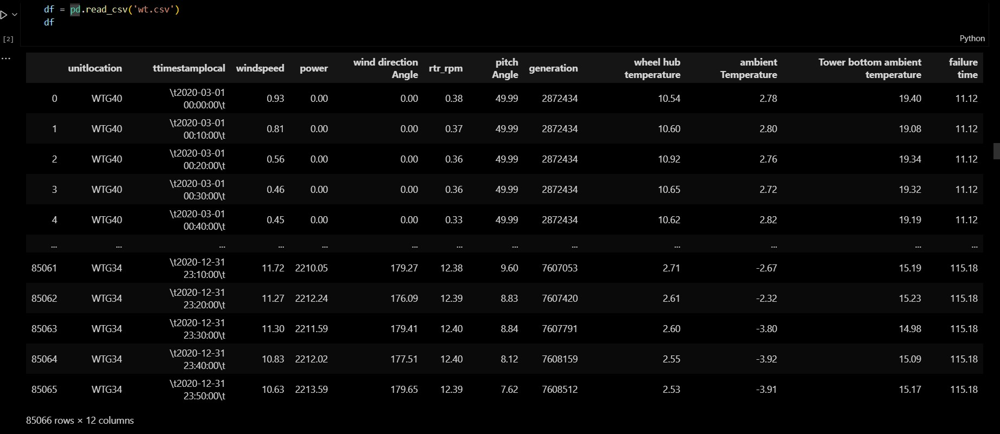
The data has following columns:
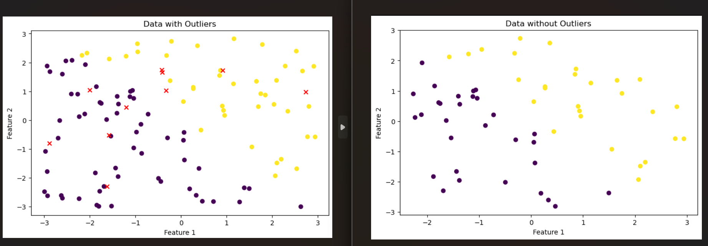
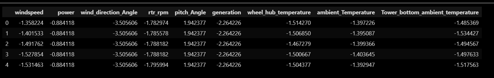
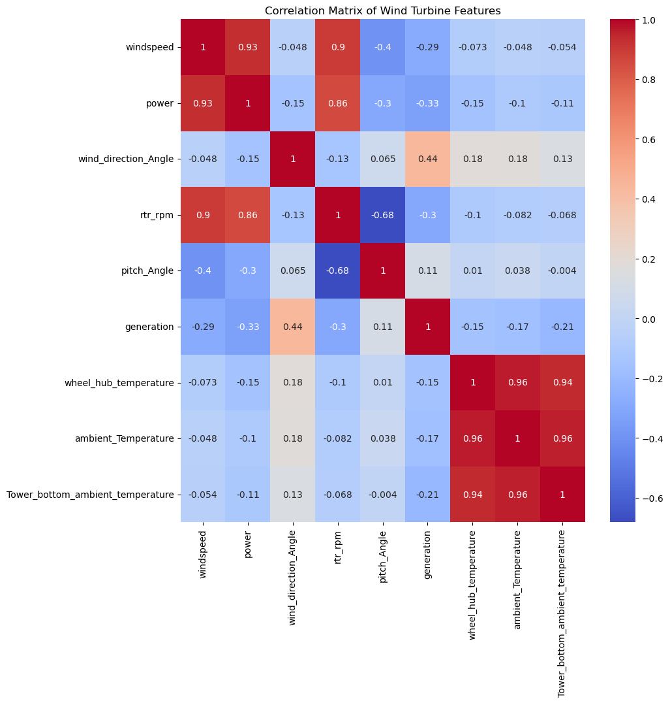
Code is provided with attachments.
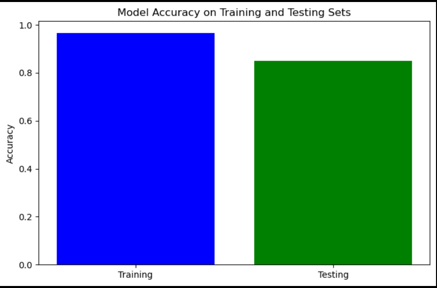
Accuracy on training set: 96.67%
Accuracy on testing set: 85.00%
Number of errors on training set: 32
Number of errors on testing set: 12
The model is not overfitting.
import warnings
warnings.filterwarnings('ignore')
import numpy as np
import pandas as pd
import matplotlib
import matplotlib.pyplot as plt
from sklearn.preprocessing import StandardScaler
plt.rcParams["figure.figsize"] = (20,10)df = pd.read_csv('wt.csv')
df| unitlocation | ttimestamplocal | windspeed | power | wind direction Angle | rtr_rpm | pitch Angle | generation | wheel hub temperature | ambient Temperature | Tower bottom ambient temperature | failure time | |
|---|---|---|---|---|---|---|---|---|---|---|---|---|
| 0 | WTG40 | \t2020-03-01 00:00:00\t | 0.93 | 0.00 | 0.00 | 0.38 | 49.99 | 2872434 | 10.54 | 2.78 | 19.40 | 11.12 |
| 1 | WTG40 | \t2020-03-01 00:10:00\t | 0.81 | 0.00 | 0.00 | 0.37 | 49.99 | 2872434 | 10.60 | 2.80 | 19.08 | 11.12 |
| 2 | WTG40 | \t2020-03-01 00:20:00\t | 0.56 | 0.00 | 0.00 | 0.36 | 49.99 | 2872434 | 10.92 | 2.76 | 19.34 | 11.12 |
| 3 | WTG40 | \t2020-03-01 00:30:00\t | 0.46 | 0.00 | 0.00 | 0.36 | 49.99 | 2872434 | 10.65 | 2.72 | 19.32 | 11.12 |
| 4 | WTG40 | \t2020-03-01 00:40:00\t | 0.45 | 0.00 | 0.00 | 0.33 | 49.99 | 2872434 | 10.62 | 2.82 | 19.19 | 11.12 |
| ... | ... | ... | ... | ... | ... | ... | ... | ... | ... | ... | ... | ... |
| 85061 | WTG34 | \t2020-12-31 23:10:00\t | 11.72 | 2210.05 | 179.27 | 12.38 | 9.60 | 7607053 | 2.71 | -2.67 | 15.19 | 115.18 |
| 85062 | WTG34 | \t2020-12-31 23:20:00\t | 11.27 | 2212.24 | 176.09 | 12.39 | 8.83 | 7607420 | 2.61 | -2.32 | 15.23 | 115.18 |
| 85063 | WTG34 | \t2020-12-31 23:30:00\t | 11.30 | 2211.59 | 179.41 | 12.40 | 8.84 | 7607791 | 2.60 | -3.80 | 14.98 | 115.18 |
| 85064 | WTG34 | \t2020-12-31 23:40:00\t | 10.83 | 2212.02 | 177.51 | 12.40 | 8.12 | 7608159 | 2.55 | -3.92 | 15.09 | 115.18 |
| 85065 | WTG34 | \t2020-12-31 23:50:00\t | 10.63 | 2213.59 | 179.65 | 12.39 | 7.62 | 7608512 | 2.53 | -3.91 | 15.17 | 115.18 |
85066 rows × 12 columns
# remove spaces in columns name
df.columns = df.columns.str.replace(' ','_')df.head()| unitlocation | ttimestamplocal | windspeed | power | wind_direction_Angle | rtr_rpm | pitch_Angle | generation | wheel_hub_temperature | ambient_Temperature | Tower_bottom_ambient_temperature | failure_time | |
|---|---|---|---|---|---|---|---|---|---|---|---|---|
| 0 | WTG40 | \t2020-03-01 00:00:00\t | 0.93 | 0.0 | 0.0 | 0.38 | 49.99 | 2872434 | 10.54 | 2.78 | 19.40 | 11.12 |
| 1 | WTG40 | \t2020-03-01 00:10:00\t | 0.81 | 0.0 | 0.0 | 0.37 | 49.99 | 2872434 | 10.60 | 2.80 | 19.08 | 11.12 |
| 2 | WTG40 | \t2020-03-01 00:20:00\t | 0.56 | 0.0 | 0.0 | 0.36 | 49.99 | 2872434 | 10.92 | 2.76 | 19.34 | 11.12 |
| 3 | WTG40 | \t2020-03-01 00:30:00\t | 0.46 | 0.0 | 0.0 | 0.36 | 49.99 | 2872434 | 10.65 | 2.72 | 19.32 | 11.12 |
| 4 | WTG40 | \t2020-03-01 00:40:00\t | 0.45 | 0.0 | 0.0 | 0.33 | 49.99 | 2872434 | 10.62 | 2.82 | 19.19 | 11.12 |
df["unitlocation"].value_counts()unitlocation
WTG40 42592
WTG34 42474
Name: count, dtype: int64# Assuming your DataFrame is named df
df.drop(df[df['unitlocation'] == 'WTG34'].index, inplace=True)
df["unitlocation"].value_counts()unitlocation
WTG40 42592
Name: count, dtype: int64# get failure times
fault_time_wtg40 = df.failure_time.unique()
fault_time_wtg40array([11.12, 11.19, 11.36, 11.53, 11.7 , 11.84, 12.01, 12.18, 12.34,
12.51, 12.68, 12.84, 13.01, 13.17, 13.34, 13.51, 13.67, 13.84,
14.01, 14.18, 14.34, 14.5 , 14.67, 14.84, 15.01, 15.16, 15.34,
15.5 , 15.68, 15.84, 16.01, 16.17, 16.34, 16.51, 16.67, 16.84,
16.99, 17.17, 17.34, 17.51, 17.67, 17.84, 18. , 18.17, 18.34,
18.52, 18.66, 18.84, 19.01, 19.17, 19.33, 19.51, 20.46, 20.59,
20.76, 20.93, 21.09, 21.26, 21.4 , 21.59, 21.76, 21.92, 22.09,
22.26, 22.43, 22.58, 22.76, 22.93, 23.1 , 23.26, 23.42, 23.6 ,
23.76, 23.93, 24.09, 24.26, 24.43, 24.59, 24.76, 24.92, 25.09,
25.26, 25.42, 25.57, 25.75, 25.93, 26.09, 26.26, 26.43, 26.59,
26.76, 26.92, 27.09, 27.26, 27.43, 27.58, 27.76, 27.92, 28.09,
28.25, 28.42, 28.59, 28.76, 28.77, 28.89, 29.05, 29.58, 30.36,
30.53, 30.7 , 30.87, 31.03, 31.2 , 31.37, 31.53, 31.69, 31.88,
32.03, 32.2 , 32.37, 32.53, 32.69, 32.86, 33.04, 33.19, 33.37,
33.54, 33.7 , 33.86, 34.02, 34.2 , 34.36, 34.53, 34.7 , 34.87,
35.03, 35.19, 35.36, 35.53, 35.7 , 35.88, 36.03, 36.2 , 36.35,
36.53, 36.7 , 36.86, 37.03, 37.2 , 37.35, 37.53, 37.7 , 37.86,
38.03, 38.2 , 38.34, 38.54, 38.69, 38.86, 39.03, 39.19, 39.34,
39.52, 39.7 , 39.86, 40.03, 40.2 , 40.36, 40.53, 40.68, 40.86,
41.03, 41.19, 41.36, 41.53, 41.7 , 41.86, 42.03, 42.19, 42.34,
42.54, 42.69, 42.85, 43.03, 43.19, 43.35, 43.51, 43.69, 43.86,
44.03, 44.19, 44.36, 44.53, 44.68, 44.86, 45.02, 45.18, 45.2 ,
45.36, 45.53, 45.69, 45.86, 46.03, 46.2 , 46.37, 46.53, 46.69,
46.86, 47.03, 47.2 , 47.36, 47.53, 47.7 , 47.86, 48.03, 48.2 ,
48.36, 48.52, 48.7 , 48.86, 49.03, 49.2 , 49.36, 49.53, 49.63,
49.7 , 51.91, 51.94, 52.08, 52.24, 52.41, 52.58, 52.74, 52.9 ,
53.08, 53.24, 53.41, 53.57, 53.74, 53.89, 54.07, 54.23, 54.41,
54.57, 54.74, 54.91, 55.06, 55.23, 55.4 , 55.57, 55.72, 55.91,
56.07, 56.24, 56.4 , 56.56, 56.74, 56.9 , 57.06, 57.24, 57.41,
57.57, 57.73, 57.9 , 58.07, 58.24, 58.4 , 58.57, 58.73, 58.9 ,
59.07, 59.24, 59.4 , 59.56, 59.74, 59.9 , 60.08, 60.23, 60.4 ,
60.57, 60.73, 60.9 , 61.07, 61.24, 61.4 , 61.57, 61.74, 61.9 ,
62.07, 62.25, 62.4 , 62.57, 62.72, 62.9 , 63.07, 63.23, 63.4 ,
63.56, 63.72, 63.89, 64.07, 64.23, 64.4 , 64.57, 64.71, 64.9 ,
65.07, 65.23, 65.4 , 65.57, 65.73, 65.89, 66.07, 66.23, 66.4 ,
66.57, 66.73, 66.9 , 67.06, 67.23, 67.4 , 67.56, 67.73, 67.88,
68.06, 68.23, 68.4 , 68.56, 68.73, 68.77])# get the failure status in dataset
df['total_runtime'] = [i*10 for i in range(1,len(df)+1)]
df['is_fault'] = df['total_runtime']< fault_time_wtg40.max()# remove some columns that are unnecessary
df = df.drop(['unitlocation', 'ttimestamplocal','total_runtime', 'failure_time'], axis=1)df['is_fault'] = df['is_fault'].astype('category')
df['is_fault'] = df['is_fault'].cat.codes
# final datasets for training
y = df['is_fault']
x= df.drop(['is_fault'], axis=1)
x.describe()| windspeed | power | wind_direction_Angle | rtr_rpm | pitch_Angle | generation | wheel_hub_temperature | ambient_Temperature | Tower_bottom_ambient_temperature | |
|---|---|---|---|---|---|---|---|---|---|
| count | 42592.000000 | 42592.000000 | 42592.000000 | 42592.000000 | 42592.000000 | 4.259200e+04 | 42592.000000 | 42592.000000 | 42592.000000 |
| mean | 4.693273 | 653.797555 | 171.081463 | 7.227109 | 8.868844 | 5.665854e+06 | 22.785580 | 15.840264 | 29.088985 |
| std | 2.770764 | 739.499557 | 48.802821 | 3.840320 | 21.170777 | 1.233734e+06 | 8.086884 | 9.347388 | 6.523025 |
| min | 0.020000 | -29.840000 | 0.000000 | 0.210000 | -0.580000 | 2.872434e+06 | -4.830000 | -13.060000 | 2.960000 |
| 25% | 2.680000 | 60.047500 | 175.170000 | 5.000000 | -0.520000 | 4.843144e+06 | 17.590000 | 9.950000 | 25.087500 |
| 50% | 4.300000 | 323.215000 | 180.520000 | 7.120000 | -0.500000 | 5.916913e+06 | 23.820000 | 17.280000 | 30.310000 |
| 75% | 6.372500 | 1056.462500 | 185.160000 | 10.540000 | 1.950000 | 6.577421e+06 | 29.562500 | 23.180000 | 33.890000 |
| max | 19.210000 | 2224.870000 | 355.970000 | 12.480000 | 90.470000 | 7.529655e+06 | 37.210000 | 36.210000 | 44.830000 |
# check there is any null value present in dataset or not
print(x.isnull().values.any())
# 1 -> outlier and 0-> normal
yFalse0 1
1 1
2 1
3 1
4 1
..
42587 0
42588 0
42589 0
42590 0
42591 0
Name: is_fault, Length: 42592, dtype: int8# Calculate the correlation matrix
corr_matrix = x.corr()# Rank the correlation coefficients
ranked_corr_matrix = corr_matrix.stack().sort_values(ascending=False)
# Print the top 10 correlations
print("Top 10 Correlations:")
print(ranked_corr_matrix.head(10))
# Plot the correlation matrix
import seaborn as sns
plt.figure(figsize=(10, 10))
sns.heatmap(corr_matrix, annot=True, cmap='coolwarm')
plt.title('Correlation Matrix of Wind Turbine Features')
plt.show()Top 10 Correlations:
windspeed windspeed 1.000000
power power 1.000000
ambient_Temperature ambient_Temperature 1.000000
wheel_hub_temperature wheel_hub_temperature 1.000000
generation generation 1.000000
rtr_rpm rtr_rpm 1.000000
wind_direction_Angle wind_direction_Angle 1.000000
pitch_Angle pitch_Angle 1.000000
Tower_bottom_ambient_temperature Tower_bottom_ambient_temperature 1.000000
ambient_Temperature wheel_hub_temperature 0.963429
dtype: float64# Apply LDA to reduce dimensionality reduction
fatures_name = x.columns.tolist()
x_std = StandardScaler().fit_transform(x)
x_std = pd.DataFrame(x_std,columns= fatures_name)
x_std.head(5)| windspeed | power | wind_direction_Angle | rtr_rpm | pitch_Angle | generation | wheel_hub_temperature | ambient_Temperature | Tower_bottom_ambient_temperature | |
|---|---|---|---|---|---|---|---|---|---|
| 0 | -1.358224 | -0.884118 | -3.505606 | -1.782974 | 1.942377 | -2.264226 | -1.514270 | -1.397226 | -1.485369 |
| 1 | -1.401533 | -0.884118 | -3.505606 | -1.785578 | 1.942377 | -2.264226 | -1.506850 | -1.395087 | -1.534427 |
| 2 | -1.491762 | -0.884118 | -3.505606 | -1.788182 | 1.942377 | -2.264226 | -1.467279 | -1.399366 | -1.494567 |
| 3 | -1.527854 | -0.884118 | -3.505606 | -1.788182 | 1.942377 | -2.264226 | -1.500667 | -1.403645 | -1.497633 |
| 4 | -1.531463 | -0.884118 | -3.505606 | -1.795994 | 1.942377 | -2.264226 | -1.504377 | -1.392947 | -1.517563 |
from sklearn.discriminant_analysis import LinearDiscriminantAnalysis as LDA
lda_ = LDA().fit(x_std, y)
desired_variance = 0.90
fig, ax = plt.subplots()
yi = np.cumsum(lda_.explained_variance_ratio_)
xi = np.arange(1, yi.shape[0]+1, step=1)
plt.ylim(0.0,1.1)
plt.plot(xi, yi, marker='o', linestyle='--', color='b')
plt.xlabel('Number of Components')
plt.xticks(np.arange(1, yi.shape[0]+2, step=1))
plt.ylabel('Cumulative variance (%)', fontsize=16)
plt.title('The number of components needed to explain variance')
plt.axhline(y=desired_variance, color='r', linestyle='-')
plt.text(1, desired_variance+ 0.05, str(desired_variance*100) +'% cut-off threshold', color='b', fontsize=16)
ax.grid(axis='x')
plt.show()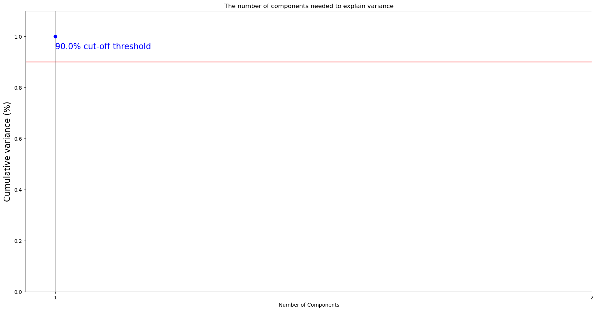
# from above figure to acheive 0.95 explained varience we need 5 components
lda = LDA(n_components=1)
X = lda.fit_transform(x_std, y)
Xarray([[4.90729526],
[4.93406475],
[4.85308476],
...,
[0.20430609],
[0.16800172],
[0.19590956]])# variance ratio of each components
lda.explained_variance_ratio_array([1.])plt.scatter(X[:, 0], X[:, 0], color='blue')
plt.ylabel("LD1")
plt.xlabel("LD2")
plt.show()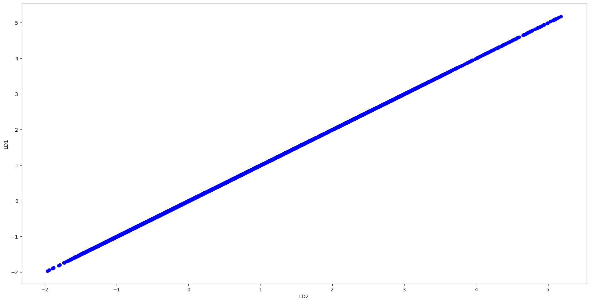
def myplot(score, coeff, labels=None):
xs = score[:, 0]
ys = np.zeros_like(xs) # Create a dummy array for the y-coordinate
n = coeff.shape[0]
scalex = 1.0 / (xs.max() - xs.min())
scaley = 1.0 / (ys.max() - ys.min())
plt.scatter(xs * scalex, ys * scaley)
for i in range(n):
plt.arrow(0, 0, coeff[i, 0], coeff[i, 0], color='r') # Use coeff[i, 0] for both x and y
if labels is None:
plt.text(coeff[i, 0] * 1.15, coeff[i, 0] * 1.15, "Var" + str(i + 1), color='r', ha='center', va='center')
else:
plt.text(coeff[i, 0] * 1.5, coeff[i, 0], labels[i], color='g', ha='center', va='center')
plt.xlim(-1, 1)
plt.ylim(-1, 1)
plt.xlabel("LD{}".format(1))
plt.ylabel("LD{}".format(2))
plt.grid()
plt.show()
# Assuming x_std is a DataFrame or Series with column names as labels
myplot(X[:, 0:2], np.transpose(lda.coef_[0:2, :]), x_std.columns)
# number of components
n_lds= lda.coef_.shape[0]
most_important = [np.abs(lda.coef_[i]).argmax() for i in range(n_lds)]
# get the names
most_important_names = [fatures_name[most_important[i]] for i in range(n_lds)]
most_important_names['rtr_rpm']# Now using scikit-learn model_selection module, split the data into train/test sets
from sklearn.model_selection import train_test_split
from sklearn.linear_model import LogisticRegression
# keeping 40% reserved for testing purpose and 60% data will be used to train and form model.
X_train, X_test, Y_train, Y_test = train_test_split(x_std, y, test_size=0.1, random_state=0)
# Build a Logistic Regression model
clf_ob = LogisticRegression(C=1).fit(X_train, Y_train)# showing the important features
f_names = X_train.columns.tolist()
imp_score = clf_ob.coef_.tolist()[0]
imp_score,f_names = zip(*sorted(zip(imp_score,f_names)))
plt.barh(range(len(f_names)), imp_score, align='center')
plt.yticks(range(len(f_names)), X_train)
plt.show()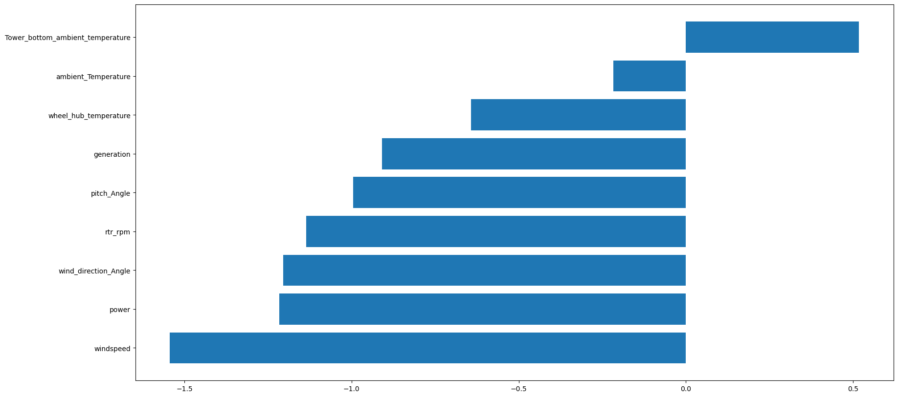
import numpy as np
import matplotlib.pyplot as plt
from sklearn.linear_model import LogisticRegression
from sklearn.metrics import accuracy_score
from sklearn.model_selection import train_test_split
# Generate synthetic data with outliers
X = np.random.uniform(low=-3, high=3, size=(100, 2))
X_outliers = np.random.uniform(low=-3, high=3, size=(10, 2)) # Outliers
y = np.where(X[:, 0] + X[:, 1] > 0, 1, -1) # Binary classification
# Split the data into training and testing sets
X_train, X_test, y_train, y_test = train_test_split(X, y, test_size=0.2, random_state=42)
# Remove outliers from training data
# Determine the threshold for outlier removal
outlier_threshold = 3 # Any data point with a distance greater than this threshold will be considered an outlier
# Calculate the distance of each data point from the origin
distances = np.linalg.norm(X_train, axis=1)
# Remove data points that are further than the threshold from the origin
X_train_no_outliers = X_train[distances < outlier_threshold, :]
y_train_no_outliers = y_train[distances < outlier_threshold]
# Train logistic regression model on data without outliers
clf = LogisticRegression()
clf.fit(X_train_no_outliers, y_train_no_outliers)
# Make predictions on training and testing sets
y_pred_train = clf.predict(X_train_no_outliers)
y_pred_test = clf.predict(X_test)
# Calculate accuracy scores
accuracy_train = accuracy_score(y_train_no_outliers, y_pred_train)
accuracy_test = accuracy_score(y_test, y_pred_test)
# Calculate number of errors
n_error_train = y_pred_train[y_pred_train == -1].size
n_error_test = y_pred_test[y_pred_test == -1].size
# Print results
print(f"Accuracy on training set: {accuracy_train:.2%}")
print(f"Accuracy on testing set: {accuracy_test:.2%}")
print(f"Number of errors on training set: {n_error_train}")
print(f"Number of errors on testing set: {n_error_test}")
# Check for overfitting
overfitting_test = accuracy_train - accuracy_test
print(f"Overfitting test result: {overfitting_test:.2%}")
# Plotting
plt.figure(figsize=(8, 5))
plt.scatter(X[:, 0], X[:, 1], c=y)
plt.scatter(X_outliers[:, 0], X_outliers[:, 1], c='red', marker='x')
plt.xlabel('Feature 1')
plt.ylabel('Feature 2')
plt.title('Data with Outliers')
plt.show()
plt.figure(figsize=(8, 5))
plt.scatter(X_train_no_outliers[:, 0], X_train_no_outliers[:, 1], c=y_train_no_outliers)
plt.xlabel('Feature 1')
plt.ylabel('Feature 2')
plt.title('Data without Outliers')
plt.show()
plt.figure(figsize=(8, 5))
plt.bar(['Training', 'Testing'], [accuracy_train, accuracy_test], color=['blue', 'green'])
plt.ylabel('Accuracy')
plt.title('Model Accuracy on Training and Testing Sets')
plt.show()
# Check if overfitting is present
if overfitting_test > 0.05:
print("The model may be overfitting.")
else:
print("The model is not overfitting.")Accuracy on training set: 100.00%
Accuracy on testing set: 95.00%
Number of errors on training set: 30
Number of errors on testing set: 13
Overfitting test result: 5.00%
The model may be overfitting.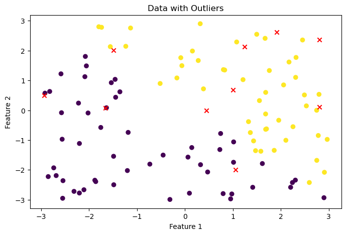
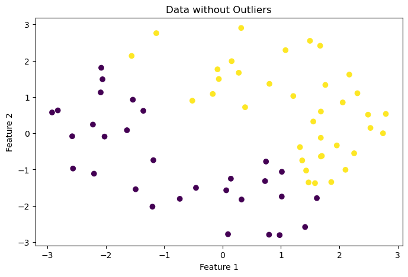
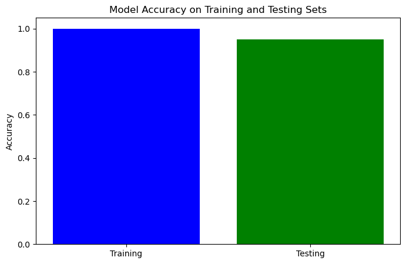